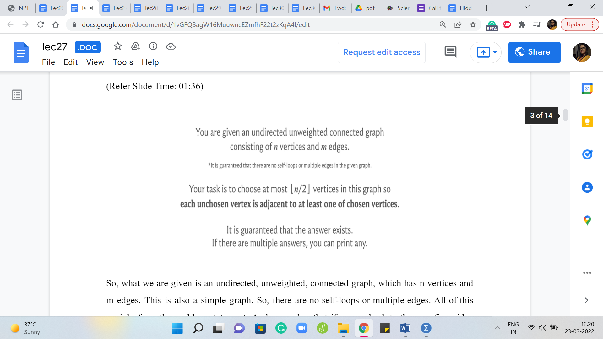
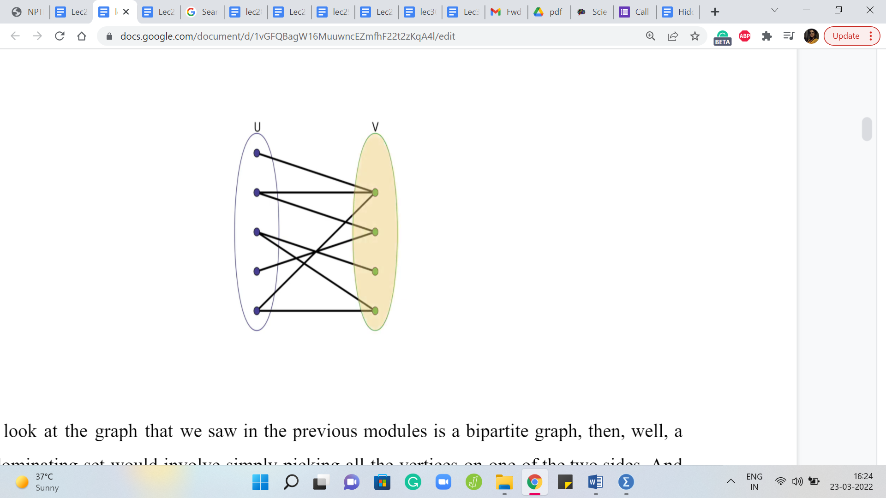
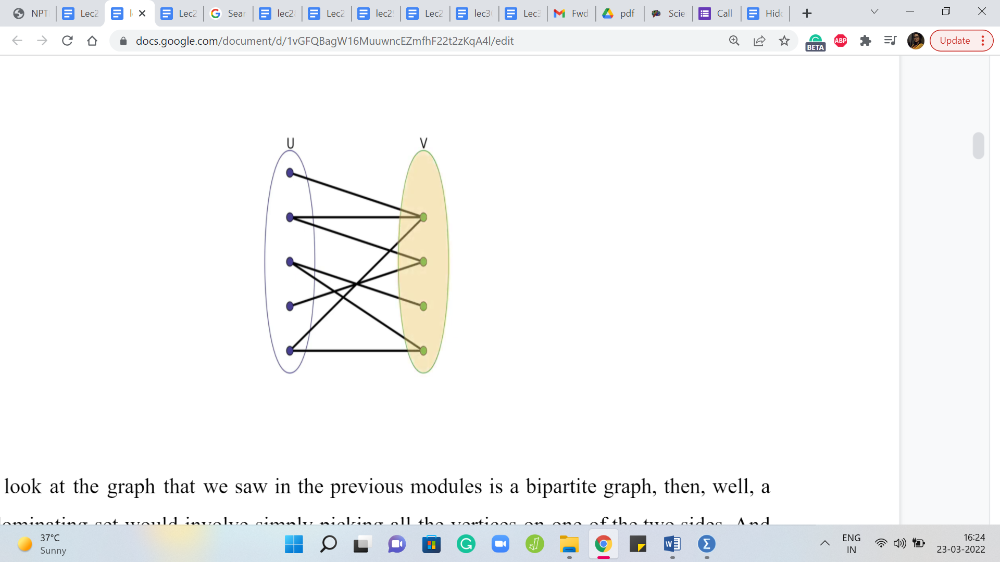
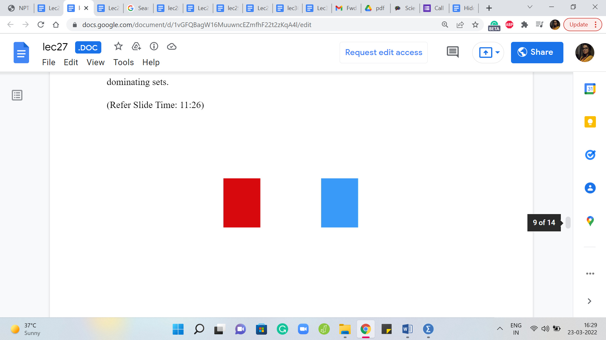
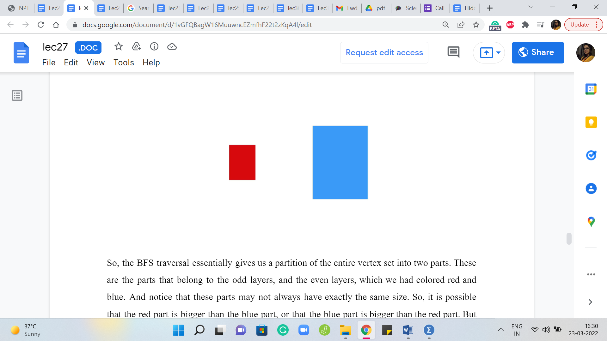
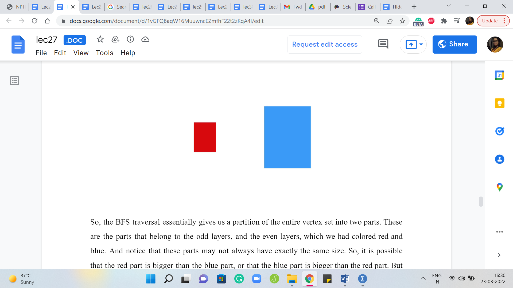
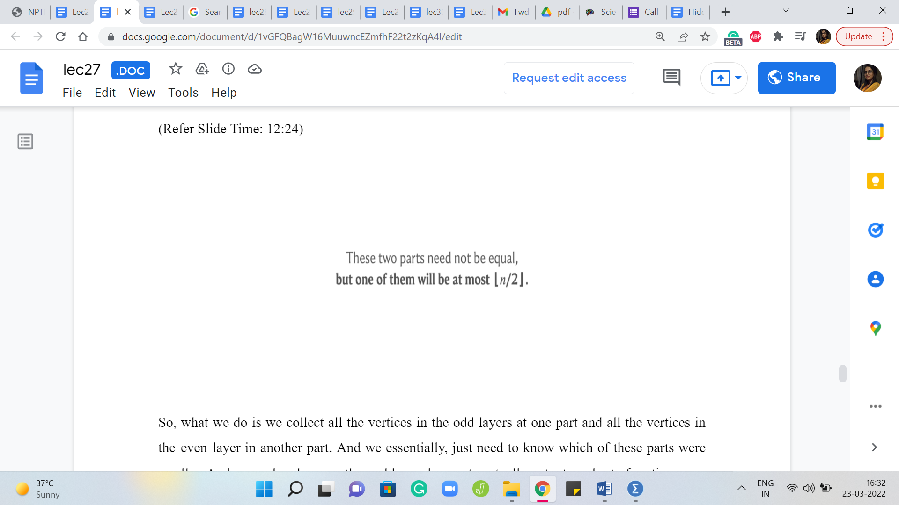
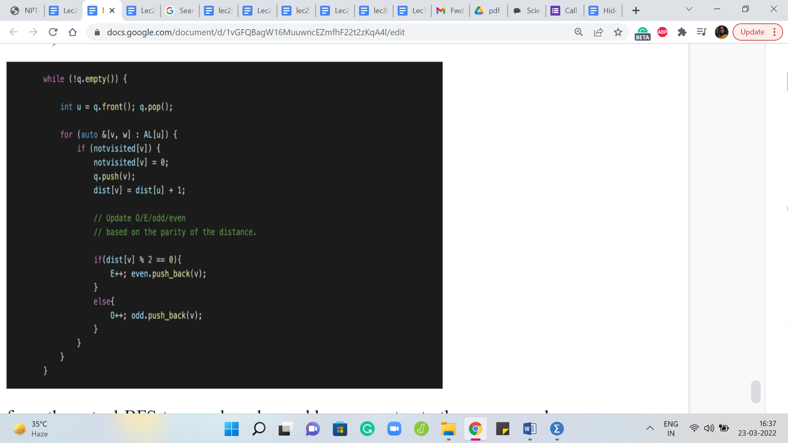

M 3 (Cover It!)
Lecture - 27
Graph Foundations - Module 3 (Cover It!)
(Refer Slide Time: 0:12)

Welcome back to the third module of the fifth week in Getting Started with Competitive Programming. So, this week, it is all about graph traversals. We are looking at applications of BFS and DFS. And let us look at another one of them through this problem called ‘cover it,’ which appeared in a Div 3 Codeforces contest. This was contest number 565, and it was the fifth problem in the set. It was a set, which had six problems altogether.
And the fifth problem in the set is usually an indication that this problem is one of the relatively harder problems. In fact, if you look at the stats, you will see that more people solve this problem than the fourth one. But it was still only solved by 1300 people relative to about 7000 odd people who did the first one. So, I think there is a relative difficulty thing there. It turns out that this problem has a really cute and simple solution.
But it does require one observation which may not be obvious at all. So, that is what we are going to explore. But the final solution is fairly short and sweet. And especially once you have developed some facility with writing up BFS DFS traversals, it should be a pretty quick thing even to code up once you know what the main idea is. So, this problem does not have too much of a backstory. So, let us just get to it. We have a very specific task to do.
(Refer Slide Time: 01:36)

So, what we are given is an undirected, unweighted, connected graph, which has n vertices and m edges. This is also a simple graph. So, there are no self-loops or multiple edges. All of this is straight from the problem statement. And remember that if you go back to the very first video that we did this week, we said that this is going to be our default happy setting where the graph is simple, and it is undirected, unweighted, and in this case, we are also given that it is connected. So, that is, that is a familiar situation. And what are we supposed to do?
Well, we are supposed to figure out if we can find a subset of at most n/2 vertices, n/2 floor. So, if n is odd, we want the smaller half in some sense. So, we want at most floor n/2 many vertices, which have the property that each unchosen vertex is adjacent to at least one of the chosen vertices. Now, those who are familiar with graph theory terminology may recognize this as what we call a dominating set.
A dominating set in a graph is a subset of vertices, which is such that every vertex that is outside the dominating set has a neighbor in the dominating set. And essentially, what this problem is telling us is that you are given a connected graph, and you are supposed to find a dominating set that consists only of at most half the vertices. We are also promised that the answer always exists and if there are multiple answers then you can print any of them.
Now the fact that the answer always exists can be interpreted in two ways. One is that you are only given such graphs that have such a subset. Or it could be that the answer is universally true. That any connected, undirected, unweighted graph on n vertices always has a dominating set on at most floor n/2 many vertices. So, we are about to figure out if this is universally true. But before we do that, let us just get used to the idea of what it means for a subset of vertices to be a dominating set by just pulling up a few examples.
(Refer Slide Time: 03:37 & 04:04)
 

So, here is a graph that you might remember from the first module. So, you can see that there is sort of an outer circle and an inner circle. And they both have the same number of vertices. And it turns out that you could choose either the inner circle or the outer one. And those would be perfectly valid dominating sets. And their sizes are, of course, exactly half of the total number of vertices. So, this is, in fact, exactly what we want.
If you look at the graph that we saw in the previous module – this is a bipartite graph, then, well, a valid dominating set would involve simply picking all the vertices on one of the two sides. Right. And if you want the smallest possible dominating set and one that is easy to see, then you could simply pick the smaller of the two sides. And notice that this already guarantees you at least on connected bipartite graphs that you always have a dominating set involving at most half the vertices.
Because when you have two parts, at least one of the two parts will have at most half the vertices. Right. It is possible that both of them are exactly half and half. But if they are not both exactly half, then it is going to be that one of them is more than half and the other is less than half. So, you just pick the smaller side and you would have a dominating set of the desired size.
Now moving beyond these really specific examples, let us just think about what would be a way of finding a small dominating set, whereby small, I simply mean a set whose size is at most half the total number of vertices. So, how would you find a small dominating set on a general graph?
Well, you could, for example, just try an arbitrary partition of the graph into two subsets of the same size. And then basically examine if neither of them works, then can you move things around a bit, so that you can fix the partition and turn it into a dominating set.
If you play around with this a little bit, you might eventually end up coming up with proof of why you can always find a dominating set of size at most floor n/2. Now, I will leave you to think about this a little bit and fool around with some more examples and build up some intuition. But as I said, there is really one key observation after which you end up basically solving the entire problem.
Also, knowing that this is a problem that has come up in the context of graph traversals, you might want to execute a BFS or a DFS, and just see if these traversals give you any hints about dominating sets. Like, do they have, somehow in a natural way, a dominating set hiding somewhere if you were to execute one of these traversals?
So, take your time. Think about this for a moment. And as I said, when we come back, we will discuss the one key idea that essentially solves this problem. Alright. So, hopefully, you had a chance to think about this a little bit.
(Refer Slide Time: 06:48)


Let me show you a picture of a BFS traversal with the layers color-coded so that alternate layers have different colors. So, the solid edges from this picture are the edges along which the traversal actually executed. And all the dotted edges are all the remaining edges from the graph that their traversal did not have to follow. Alright. So, given this picture, is there anything that stands out? Notice that just like we did for the previous problem, the alternate layers have been colored using different colors.
We also said that if your graph happens to be bipartite, then you could just pick one of the two parts and that would be a valid dominating set. So, a very reasonable thing for you to think maybe would be that, well, the red and the blue vertices form some sort of partition into two parts. So, maybe we could just pick one of them. But notice that for a general graph, which is not a tree, the red and blue partition may not be actually a bipartition.
So, in particular, if somebody just gives you a partition into two parts, you could not just say that you will pick the smaller part. And that would be a dominating set. Right. Because it is possible that the other part has a vertex, and all of its neighbors just sitting on the other side. And so this would not be a valid dominating set. But with this particular bipartition, even though notice that because of these extra graph edges that I have shown here, this is not necessarily a bipartition. It is not, the graph is not bipartite.
In fact, you can see that because there is a triangle right on top. But in spite of that, I think these partitions are still fairly helpful in the context of building a dominating set. So, in fact, you might want to treat the picture here as a hint and just work through the problem of finding a small dominating set for this specific example. And I think you might find some pretty nicely generalizable intuition. Really think about not just finding some small dominating set by brute force.
But by considering if there is a natural choice for a dominating set based on the way that these vertices have been colored for you. And think about why this will actually always form a dominating set in a more general sort of way. So, please feel free to take a pause here. I think you have a few more pieces of the puzzle in place. And you might just completely discover the solution yourself if you were to spend some time on it at this stage of the discussion.
Alright. So, hopefully, you had a chance to think through this. Notice that, in fact, both the red vertices as well as the blue vertices form dominating sets on their own. And the reason for this is that, well, let us consider the red vertices first. Notice that because the BFS traversal started out with a red vertex, it is pretty much by the definition of the way that traversal works, every blue vertex is adjacent to a red vertex.
In fact, many people when implementing BFS like to maintain an explicit parent array, where the goal is to basically remember: Why did you get added to the queue in the course of the BFS traversal? So, if I got discovered by a particular vertex, and because of that I got pushed to the end of the queue, then I am going to remember that vertex as being some sort of a parent vertex, so the vertex that was responsible for my discovery.
So, in particular, notice that every blue vertex is discovered by a red vertex or has a red parent, which means that if we were to choose all the red vertices, then every blue vertex, which would be in this case, the unchosen vertices would end up having a neighbor among the red vertices because that is simply how the traversal worked. Now it is the exact same story for the blue vertices as well.
So, every red vertex has a blue parent, except possibly for the red vertex that started the whole traversal. So, that vertex does not have a parent because it was the beginning of it all. But it certainly has blue neighbors and all the remaining red vertices have blue neighbors because they have, in particular, blue parent vertices for sure. Therefore, what we can say is that both the red vertices and the blue vertices, which are essentially vertices that are on the odd layers of a BFS, traversal, and even layers of a BFS traversal. Both of these subsets of vertices are essentially dominating sets.
(Refer Slide Time: 11:26)
  

So, the BFS traversal essentially gives us a partition of the entire vertex set into two parts. These are the parts that belong to the odd layers, and the even layers, which we had colored red and blue. And notice that these parts may not always have exactly the same size. So, it is possible that the red part is bigger than the blue part, or that the blue part is bigger than the red part. But just like we said, when we were talking about bipartite graphs, it does not really matter.
As long as you have a partition of the vertex set into two dominating sets, we know that at least one of them is going to be suitably small, simply because we are only looking for a dominating set, which has at the most floor of n/2 many vertices. So, it cannot be the case that both of these parts are strictly bigger than the floor of n/2. Because if that was true, then the total number of vertices would be greater than n, which would be a contradiction. So, with this one observation, we are basically done.
(Refer Slide Time: 12:24)

So, what we do is we collect all the vertices in the odd layers in one part and all the vertices in the even layer in another part. And we essentially, just need to know which of these parts were smaller. And remember, because the problem asks you to actually output a subset of vertices, you also have to keep track of which vertices belong to which part so that you can output them at the end.
Now, you might remember that I did say that if you wanted to solve the previous problem about bipartiteness using BFS, you might get some hints from here. So, remember that for the previous problem also, you wanted to keep track of vertices on the odd and the even layer separately, but there, all you wanted to track was the sizes of the two parts and that is all that you cared about. So, essentially, the code that we write here would also be relevant to the previous problem. You just have to tweak what you output a little bit for this to work for the previous problem.
(Refer Slide Time: 13:24)

Alright. So, with that said, let us take a look at the implementation. So, here is the usual BFS code, but we just need to introduce a few extra variables to keep track of what is going on with the odd and the even layers. So, we have these two vectors, odd and even which are designed to actually keep track of the vertices and we have the variables O and E, which will keep track of the sizes.
So, to begin with, when we initialize BFS with the first vertex, then let us say that that is an even layer, if you think of it as layer 0, then I think that would make sense. So, we add this vertex to the even list, and we increment the number of even vertices. And then the rest of it is standard BFS initialization.
(Refer Slide Time: 14:08 & 14:52)
 
Now when we perform the actual BFS traversal, and we add a new vertex to the queue, we have to basically figure out: Does this go on to an even layer or an odd layer? So, this is where the distance array comes in handy. So, remember that the distance array helps us keep track of distances from the route, the place from where we started the traversal. And if the distance value for this new vertex is odd, then it is on an odd layer.
And if it is even then it is on an even layer. So, that is essentially the if statement here, which lets you appropriately add the vertex to either the odd list or the even list. And you should remember the increment your odd and even counts as well.
These counts will be important for the final step where you have to decide which of these lists is a smaller one. Of course, instead of maintaining the counts as you go along, you could of course just evaluate the lengths of these lists once at the end as well. So, either way, works out fine. But the final step would just involve printing all the vertices in the odd list or the even list as the case may be. And then you are pretty much done.
So, this is essentially the complete solution to cover it. And as always, you can find this code in the official repository. There is a link in the description of this video as well. And I hope that you have a chance to check this out. And, you know, if you write this up in your favorite programming language, please do submit a pull request. And if you have any questions or comments, or perhaps a different way of doing this, then please let us know by dropping a line in either the mailing lists or the Discord community forums.
So, we will see you there. And we want to do one more problem this week called Diamond Inheritance. And that is coming up in the next video. So, I will see you there. Thanks for watching and bye for now!